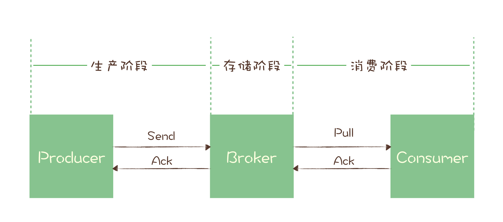

- 00 开篇词 优秀的程序员，你的技术栈中不能只有“增删改查”.md.html
- 00 预习 怎样更好地学习这门课？.md.html
- 01 为什么需要消息队列？.md.html
- 02 该如何选择消息队列？.md.html
- 03 消息模型：主题和队列有什么区别？.md.html
- 04 如何利用事务消息实现分布式事务？.md.html
- 05 如何确保消息不会丢失.md.html
- 06 如何处理消费过程中的重复消息？.md.html
- 07 消息积压了该如何处理？.md.html
- 08 答疑解惑（一） 网关如何接收服务端的秒杀结果？.md.html
- 09 学习开源代码该如何入手？.md.html
- 10 如何使用异步设计提升系统性能？.md.html
- 11 如何实现高性能的异步网络传输？.md.html
- 12 序列化与反序列化：如何通过网络传输结构化的数据？.md.html
- 13 传输协议：应用程序之间对话的语言.md.html
- 14 内存管理：如何避免内存溢出和频繁的垃圾回收？.md.html
- 15 Kafka如何实现高性能IO？.md.html
- 16 缓存策略：如何使用缓存来减少磁盘IO？.md.html
- 17 如何正确使用锁保护共享数据，协调异步线程？.md.html
- 18 如何用硬件同步原语（CAS）替代锁？.md.html
- 19 数据压缩：时间换空间的游戏.md.html
- 20 RocketMQ Producer源码分析：消息生产的实现过程.md.html
- 21 Kafka Consumer源码分析：消息消费的实现过程.md.html
- 22 Kafka和RocketMQ的消息复制实现的差异点在哪？.md.html
- 23 RocketMQ客户端如何在集群中找到正确的节点？.md.html
- 24 Kafka的协调服务ZooKeeper：实现分布式系统的“瑞士军刀”.md.html
- 25 RocketMQ与Kafka中如何实现事务？.md.html
- 26 MQTT协议：如何支持海量的在线IoT设备.md.html
- 27 Pulsar的存储计算分离设计：全新的消息队列设计思路.md.html
- 28 答疑解惑（二）：我的100元哪儿去了？.md.html
- 29 流计算与消息（一）：通过Flink理解流计算的原理.md.html
- 30 流计算与消息（二）：在流计算中使用Kafka链接计算任务.md.html
- 31 动手实现一个简单的RPC框架（一）：原理和程序的结构.md.html
- 32 动手实现一个简单的RPC框架（二）：通信与序列化.md.html
- 33 动手实现一个简单的RPC框架（三）：客户端.md.html
- 34 动手实现一个简单的RPC框架（四）：服务端.md.html
- 35 答疑解惑（三）：主流消息队列都是如何存储消息的？.md.html
- 加餐 JMQ的Broker是如何异步处理消息的？.md.html
- 结束语 程序员如何构建知识体系？.md.html
05 如何确保消息不会丢失
你好，我是李玥。这节课我们来聊聊丢消息的事儿。
对于刚刚接触消息队列的同学，最常遇到的问题，也是最头痛的问题就是丢消息了。对于大部分业务系统来说，丢消息意味着数据丢失，是完全无法接受的。
其实，现在主流的消息队列产品都提供了非常完善的消息可靠性保证机制，完全可以做到在消息传递过程中，即使发生网络中断或者硬件故障，也能确保消息的可靠传递，不丢消息。
绝大部分丢消息的原因都是由于开发者不熟悉消息队列，没有正确使用和配置消息队列导致的。虽然不同的消息队列提供的 API 不一样，相关的配置项也不同，但是在保证消息可靠传递这块儿，它们的实现原理是一样的。
这节课我们就来讲一下，消息队列是怎么保证消息可靠传递的，这里面的实现原理是怎么样的。当你熟知原理以后，无论你使用任何一种消息队列，再简单看一下它的 API 和相关配置项，就能很快知道该如何配置消息队列，写出可靠的代码，避免消息丢失。
检测消息丢失的方法
我们说，用消息队列最尴尬的情况不是丢消息，而是消息丢了还不知道。一般而言，一个新的系统刚刚上线，各方面都不太稳定，需要一个磨合期，这个时候，特别需要监控到你的系统中是否有消息丢失的情况。
如果是 IT 基础设施比较完善的公司，一般都有分布式链路追踪系统，使用类似的追踪系统可以很方便地追踪每一条消息。如果没有这样的追踪系统，这里我提供一个比较简单的方法，来检查是否有消息丢失的情况。
**我们可以利用消息队列的有序性来验证是否有消息丢失。**原理非常简单，在 Producer 端，我们给每个发出的消息附加一个连续递增的序号，然后在 Consumer 端来检查这个序号的连续性。
如果没有消息丢失，Consumer 收到消息的序号必然是连续递增的，或者说收到的消息，其中的序号必然是上一条消息的序号 +1。如果检测到序号不连续，那就是丢消息了。还可以通过缺失的序号来确定丢失的是哪条消息，方便进一步排查原因。
大多数消息队列的客户端都支持拦截器机制，你可以利用这个拦截器机制，在 Producer 发送消息之前的拦截器中将序号注入到消息中，在 Consumer 收到消息的拦截器中检测序号的连续性，这样实现的好处是消息检测的代码不会侵入到你的业务代码中，待你的系统稳定后，也方便将这部分检测的逻辑关闭或者删除。
如果是在一个分布式系统中实现这个检测方法，有几个问题需要你注意。
首先，像 Kafka 和 RocketMQ 这样的消息队列，它是不保证在 Topic 上的严格顺序的，只能保证分区上的消息是有序的，所以我们在发消息的时候必须要指定分区，并且，在每个分区单独检测消息序号的连续性。
如果你的系统中 Producer 是多实例的，由于并不好协调多个 Producer 之间的发送顺序，所以也需要每个 Producer 分别生成各自的消息序号，并且需要附加上 Producer 的标识，在 Consumer 端按照每个 Producer 分别来检测序号的连续性。
Consumer 实例的数量最好和分区数量一致，做到 Consumer 和分区一一对应，这样会比较方便地在 Consumer 内检测消息序号的连续性。
确保消息可靠传递
讲完了检测消息丢失的方法，接下来我们一起来看一下，整个消息从生产到消费的过程中，哪些地方可能会导致丢消息，以及应该如何避免消息丢失。
你可以看下这个图，一条消息从生产到消费完成这个过程，可以划分三个阶段，为了方便描述，我给每个阶段分别起了个名字。

- 生产阶段: 在这个阶段，从消息在 Producer 创建出来，经过网络传输发送到 Broker 端。
- 存储阶段: 在这个阶段，消息在 Broker 端存储，如果是集群，消息会在这个阶段被复制到其他的副本上。
- 消费阶段: 在这个阶段，Consumer 从 Broker 上拉取消息，经过网络传输发送到 Consumer 上。
1. 生产阶段
在生产阶段，消息队列通过最常用的请求确认机制，来保证消息的可靠传递：当你的代码调用发消息方法时，消息队列的客户端会把消息发送到 Broker，Broker 收到消息后，会给客户端返回一个确认响应，表明消息已经收到了。客户端收到响应后，完成了一次正常消息的发送。
只要 Producer 收到了 Broker 的确认响应，就可以保证消息在生产阶段不会丢失。有些消息队列在长时间没收到发送确认响应后，会自动重试，如果重试再失败，就会以返回值或者异常的方式告知用户。
**你在编写发送消息代码时，需要注意，正确处理返回值或者捕获异常，就可以保证这个阶段的消息不会丢失。**以 Kafka 为例，我们看一下如何可靠地发送消息：
同步发送时，只要注意捕获异常即可。
try {
RecordMetadata metadata = producer.send(record).get();
System.out.println(" 消息发送成功。");
} catch (Throwable e) {
System.out.println(" 消息发送失败！");
System.out.println(e);
}
异步发送时，则需要在回调方法里进行检查。这个地方是需要特别注意的，很多丢消息的原因就是，我们使用了异步发送，却没有在回调中检查发送结果。
producer.send(record, (metadata, exception) -> {
if (metadata != null) {
System.out.println(" 消息发送成功。");
} else {
System.out.println(" 消息发送失败！");
System.out.println(exception);
}
});
2. 存储阶段
在存储阶段正常情况下，只要 Broker 在正常运行，就不会出现丢失消息的问题，但是如果 Broker 出现了故障，比如进程死掉了或者服务器宕机了，还是可能会丢失消息的。
如果对消息的可靠性要求非常高，可以通过配置 Broker 参数来避免因为宕机丢消息。
对于单个节点的 Broker，需要配置 Broker 参数，在收到消息后，将消息写入磁盘后再给 Producer 返回确认响应，这样即使发生宕机，由于消息已经被写入磁盘，就不会丢失消息，恢复后还可以继续消费。例如，在 RocketMQ 中，需要将刷盘方式 flushDiskType 配置为 SYNC_FLUSH 同步刷盘。
如果是 Broker 是由多个节点组成的集群，需要将 Broker 集群配置成：至少将消息发送到 2 个以上的节点，再给客户端回复发送确认响应。这样当某个 Broker 宕机时，其他的 Broker 可以替代宕机的 Broker，也不会发生消息丢失。后面我会专门安排一节课，来讲解在集群模式下，消息队列是如何通过消息复制来确保消息的可靠性的。
3. 消费阶段
消费阶段采用和生产阶段类似的确认机制来保证消息的可靠传递，客户端从 Broker 拉取消息后，执行用户的消费业务逻辑，成功后，才会给 Broker 发送消费确认响应。如果 Broker 没有收到消费确认响应，下次拉消息的时候还会返回同一条消息，确保消息不会在网络传输过程中丢失，也不会因为客户端在执行消费逻辑中出错导致丢失。
你在编写消费代码时需要注意的是，不要在收到消息后就立即发送消费确认，而是应该在执行完所有消费业务逻辑之后，再发送消费确认。
同样，我们以用 Python 语言消费 RabbitMQ 消息为例，来看一下如何实现一段可靠的消费代码：
def callback(ch, method, properties, body):
print(" [x] 收到消息 %r" % body)
# 在这儿处理收到的消息
database.save(body)
print(" [x] 消费完成 ")
# 完成消费业务逻辑后发送消费确认响应
ch.basic_ack(delivery_tag = method.delivery_tag)
channel.basic_consume(queue='hello', on_message_callback=callback)
你可以看到，在消费的回调方法 callback 中，正确的顺序是，先是把消息保存到数据库中，然后再发送消费确认响应。这样如果保存消息到数据库失败了，就不会执行消费确认的代码，下次拉到的还是这条消息，直到消费成功。
小结
这节课我带大家分析了一条消息从发送到消费整个流程中，消息队列是如何确保消息的可靠性，不会丢失的。这个过程可以分为分三个阶段，每个阶段都需要正确的编写代码并且设置正确的配置项，才能配合消息队列的可靠性机制，确保消息不会丢失。
- 在生产阶段，你需要捕获消息发送的错误，并重发消息。
- 在存储阶段，你可以通过配置刷盘和复制相关的参数，让消息写入到多个副本的磁盘上，来确保消息不会因为某个 Broker 宕机或者磁盘损坏而丢失。
- 在消费阶段，你需要在处理完全部消费业务逻辑之后，再发送消费确认。
你在理解了这几个阶段的原理后，如果再出现丢消息的情况，应该可以通过在代码中加一些日志的方式，很快定位到是哪个阶段出了问题，然后再进一步深入分析，快速找到问题原因。